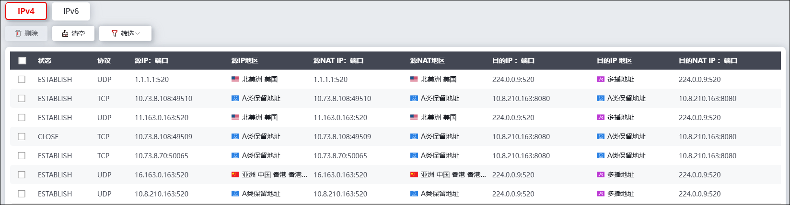
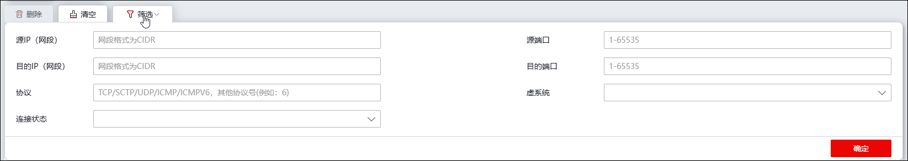

NGFW会记录与其建立连接的所有IPv4/IPv6会话的基本信息，内容包括：连接状态、协议、源/目的IP地址、源/目的端口等，这些连接信息均存储于连接表中。由于通过设备的连接众多，而记录连接表会消耗系统内存资源，所以，NGFW对连接表的大小进行了限定，表的大小，或者称之为最大并发连接数，限定了系统同时能够容纳的最大连接数量。
在对最大并发连接数进行自动化管理方面，NGFW为用户提供了两种机制，一种机制是通过连接限制策略限制最大连接数量（配置过程请参见 连接限制），在当前已建立连接数达到最大并发连接数的情况下，NGFW不能继续正常建立新连接，直到有连接释放；另外一种是连接超时机制，该机制自动中断长期处于空闲状态但仍未释放的连接（关于连接超时时间的设置请参见 连接参数），当连接在连接超时时间内无流量通过时，NGFW会自动删除该连接，释放连接资源，可避免长时间空闲的连接占用连接资源。
NGFW的连接信息界面分页展示IPv4和IPv6的连接信息，查看、查询、删除和清空连接信息的操作方式类似，下面以IPv4连接信息为例介绍如何查看、查询、删除和清空连接信息。
| 步骤1 | 选择 ，激活“IPv4连接信息”页签，如下图所示。 |

| 步骤2 | 按条件查找连接信息。 |
点击连接信息列表左上方的“筛选”，展开条件设置区域，如下图所示。

设置源/目的IP（网段）、源/目的端口、协议、虚系统、连接状态等查询参数，点击【确定】按钮将生成查询条件，生成的查询条件会展示于连接信息列表的上方，与查询条件匹配的连接信息显示在连接信息列表中。
|
²当输入多个查询参数时，同时满足所有查询条件的连接信息才会显示在列表中。 ²如果查询时不设置某个查询参数，表示查询不对参数做出任何限制。 |